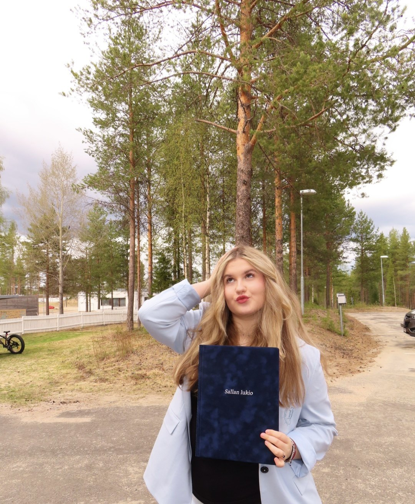
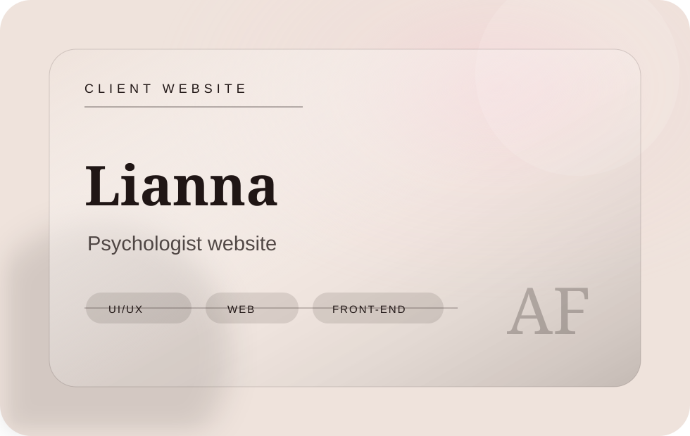
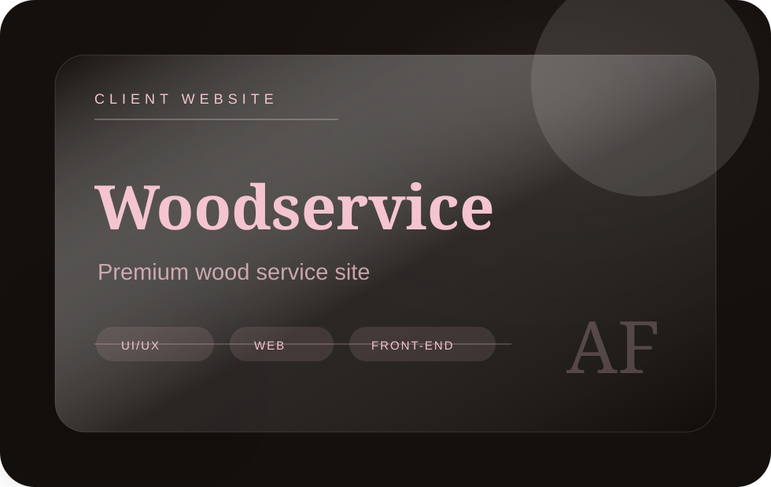
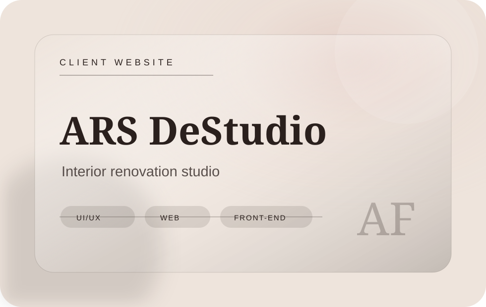
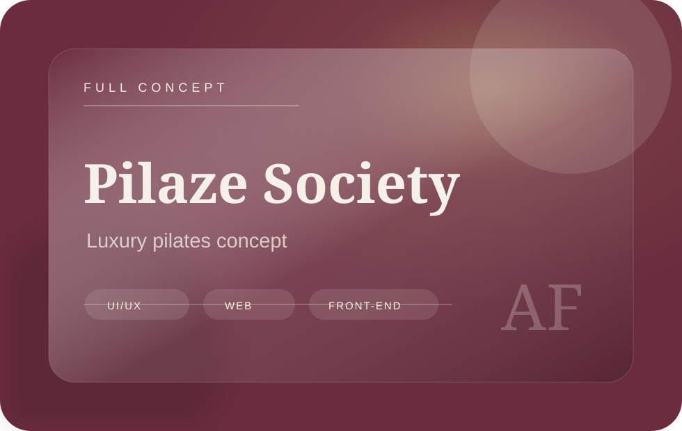
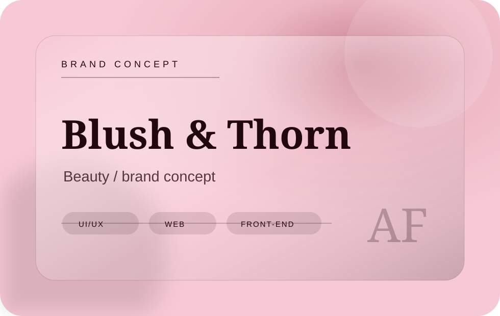
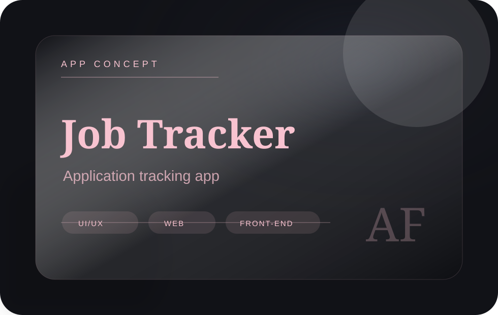

I can ship
Live websites, Vercel deployments, GitHub repositories and projects that can be opened and checked.
Hello, I’m ✦
Junior Front-End Developer
⌖ Oulu, Finland

Design
with purpose ♡
Recruiter quick view
I’m not presenting myself as a senior. I’m showing something more useful for a junior role: initiative, taste, live projects, GitHub proof and the ability to turn ideas into working websites.
Live websites, Vercel deployments, GitHub repositories and projects that can be opened and checked.
I build with hierarchy, spacing, typography, mobile layouts and user flow — not random blocks.
Marketing and branding experience helps me understand offer, audience, CTA and content structure.
I learn fast, document my work, ask practical questions and already have real project momentum.
About me
I’m a Business Information Technology student based in Oulu, Finland, focused on front-end development and digital design.
I create responsive websites from idea to launch: structure, UI, content logic, interaction details and clean HTML/CSS/JavaScript implementation.
My strongest advantage is the mix of front-end execution, design taste and marketing thinking — I can build the site, shape the visual system and make the message clear for the user.
Responsive layouts, HTML, CSS, JavaScript and implementation thinking.
Editorial typography, UI structure, brand mood and visual systems.
Clear offer, user journey, trust blocks, CTAs and content hierarchy.
Client websites, concepts, apps and portfolio projects with live links.
Selected work
A focused project system: client websites, creative concepts, and front-end/app work. Open any project to see a short case study with links.

Personal-brand psychology website

Premium service website

Interior renovation studio

Full luxury pilates concept

Bold beauty / brand concept

Job-search product concept
Luxury one-page website
Client website
Client website
Client website
Full concept
App concept
Brand concept
Code Lab
Open the live sites, inspect the repositories and quickly understand what I built, why it matters and how I think.
Interactive CV
I’m looking for a role where I can build responsive websites, improve UI, work with real content, support design implementation and grow inside a professional team.
I can turn a visual direction into a working page, keep layouts responsive, prepare projects for deployment and make the final result feel polished.
Designing and building responsive websites, landing pages, interface concepts and brand-driven digital experiences for real client and portfolio projects.
Customer-facing experience that strengthened communication, responsibility, teamwork and practical business understanding.
Bachelor of Business Administration, Business Information Technology. Focus: web development, front-end, digital services, business logic and practical IT skills.
Finnish high school education after moving from Russia to Finland — multilingual and international adaptation experience.
Live websites, GitHub repositories, responsive layouts, project modals, visual identity, content hierarchy, client-oriented structure and deployment experience.
Design fundamentals, UI thinking and AI-supported creative workflows.
Skills / Stack
Let’s work together
I’m open to opportunities where I can build responsive websites, improve UX, support visual identity and bring marketing-aware thinking into digital products.